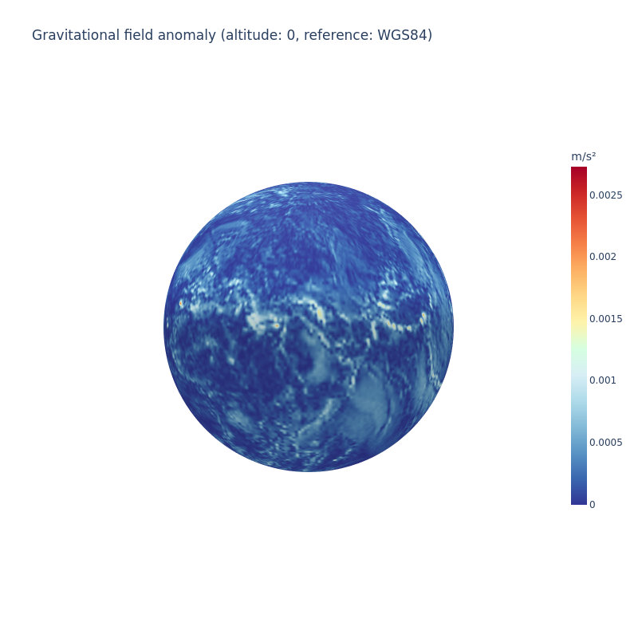

Gravitational Model Plotting¶
In this tutorial, we'll overlay the amplitude of a gravitational field over the globe.
Setup¶
Let's import the necessary libraries:
import numpy as np
import plotly.graph_objs as go
from ostk.physics import Environment
from ostk.physics.unit import Length
from ostk.physics.unit import Angle
from ostk.physics.time import Scale
from ostk.physics.time import Instant
from ostk.physics.time import DateTime
from ostk.physics.coordinate.spherical import LLA
from ostk.physics.environment.gravitational import Earth as EarthGravitationalModel
<frozen importlib._bootstrap>:241: FutureWarning: pybind11-bound class 'ostk.physics.coordinate.frame.provider.Dynamic' is using an old-style placement-new '__init__' which has been deprecated. See the upgrade guide in pybind11's docs. This message is only visible when compiled in debug mode.
Computation¶
environment = Environment.default()
earth = environment.access_celestial_object_with_name("Earth")
The considered gravitational model:
gravitational_model = EarthGravitationalModel(EarthGravitationalModel.Type.EGM96)
The reference gravitational model:
gravitational_model_ref = EarthGravitationalModel(EarthGravitationalModel.Type.WGS84)
Generate a latitude-longitude grid:
density = 1.0
longitudes = np.linspace(-180.0, +180.0, int(360 * density + 1))
latitudes = np.linspace(-90.0, +90.0, int(180 * density + 1))
Compute gravitational anomaly (the absolute difference between the two models):
instant = Instant.date_time(DateTime(2015, 1, 1, 0, 0, 0), Scale.UTC)
def ecef_ll(latitude_deg, longitude_deg):
return LLA(
Angle.degrees(latitude_deg), Angle.degrees(longitude_deg), Length.meters(0.0)
).to_cartesian(earth.get_equatorial_radius(), earth.get_flattening())
gravitational_field_magnitudes = []
for latitude in latitudes:
tmp_gravitational_field_magnitudes = []
for longitude in longitudes:
gravitational_field = gravitational_model.get_field_value_at(
ecef_ll(latitude, longitude), instant
).T[0]
gravitational_field_ref = gravitational_model_ref.get_field_value_at(
ecef_ll(latitude, longitude), instant
).T[0]
gravitational_field_norm = np.linalg.norm(
gravitational_field - gravitational_field_ref
)
tmp_gravitational_field_magnitudes.append(gravitational_field_norm)
gravitational_field_magnitudes.append(tmp_gravitational_field_magnitudes)
Display¶
Plot onto a sphere:
def map_to_sphere(lon, lat, radius=1):
"""
Maps points of coords (lon, lat) to points onto a sphere
"""
deg2rad = lambda deg: deg * np.pi / 180.0
lon = np.array(lon, dtype=np.float64)
lat = np.array(lat, dtype=np.float64)
lon = deg2rad(lon)
lat = deg2rad(lat)
xs = radius * np.cos(lon) * np.cos(lat)
ys = radius * np.sin(lon) * np.cos(lat)
zs = radius * np.sin(lat)
return (xs, ys, zs)
(XS, YS, ZS) = map_to_sphere(*np.meshgrid(longitudes, latitudes))
colorscale = [
[0.0, "#313695"],
[0.07692307692307693, "#3a67af"],
[0.15384615384615385, "#5994c5"],
[0.23076923076923078, "#84bbd8"],
[0.3076923076923077, "#afdbea"],
[0.38461538461538464, "#d8eff5"],
[0.46153846153846156, "#d6ffe1"],
[0.5384615384615384, "#fef4ac"],
[0.6153846153846154, "#fed987"],
[0.6923076923076923, "#fdb264"],
[0.7692307692307693, "#f78249"],
[0.8461538461538461, "#e75435"],
[0.9230769230769231, "#cc2727"],
[1.0, "#a50026"],
]
noaxis = dict(
showbackground=False,
showgrid=False,
showline=False,
showticklabels=False,
ticks="",
title="",
zeroline=False,
)
figure = go.Figure(
data=[
go.Surface(
x=XS,
y=YS,
z=ZS,
surfacecolor=gravitational_field_magnitudes,
colorscale=colorscale,
cmin=np.min(gravitational_field_magnitudes),
cmax=np.max(gravitational_field_magnitudes),
colorbar=go.surface.ColorBar(
title="m/s²", thickness=20, len=0.75, ticklen=4
),
)
],
layout=go.Layout(
title="Gravitational field anomaly (altitude: 0, reference: WGS84)",
width=800,
height=800,
scene=go.layout.Scene(
xaxis=noaxis,
yaxis=noaxis,
zaxis=noaxis,
aspectratio=go.layout.scene.Aspectratio(x=1, y=1, z=1),
camera=dict(eye=dict(x=1.15, y=1.15, z=1.15)),
),
),
)
figure.show("png")

References¶
https://plot.ly/~empet/14813/heatmap-plot-on-a-spherical-map/#/
https://cddis.nasa.gov/926/egm96/egm96.html
https://people.sc.fsu.edu/~lb13f/projects/space_environment/egm96.php
https://plotlyblog.tumblr.com/post/171585173862/how-to-create-2d-and-3d-interactive-weather-maps